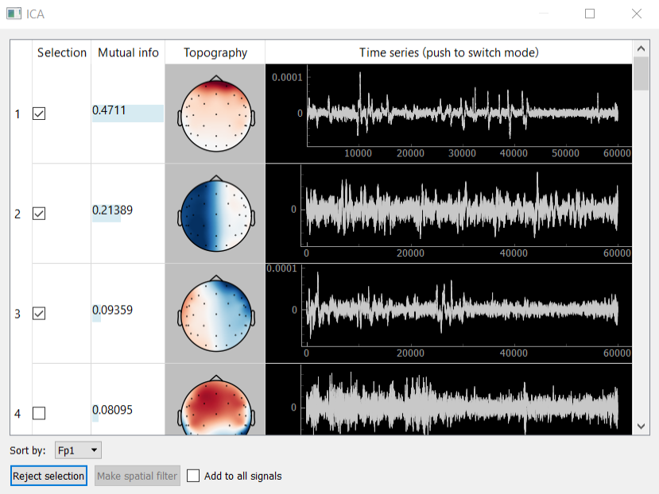

ICA
Method ICA (independent component analysis) is used to decompose the signal into independent components and is used for the isolation and removal of various kinds of artifacts. Designed graphical interface to visualize and select the component allows you to display the components themselves (column Time series), their spectra (column Time series after clicking on the column header) and topography (Topography column), sort them by mutual information with a certain channel. Calculations of the expansion are carried out using the ICA class of mne package. Buttons allow the bottom panel to add to the signal bandstop filter for the artifact removal filter or to isolate any of the components.
Example: removing eye artifacts
One of the examples of the ICA application is to create a spatial filter, which allows you to remove eye artifacts. The following describes a typical algorithm of this procedure:
1. Data collection. To do this in one of the protocols (e.g. call it “Filters”) give to the subject the task “look at the screen” during the protocol and protocol settings, set the checkbox “Open signal manager in the end (SSD, CSP, ICA)”.
2. ICA decomposition of the collected data. During the experiment, at the end of the protocol, at the time of opening the signals manager, necessary to select the signal to which you want to add eye filter, then click on the appropriate line of the open button from ICA column. Collected in the “Protocol Filters” multichannel data will be decomposed into n components by ICA (n - number of channels). Next window appears to visualize data components; in Figure 8 you could see an example.
3. Selection of the artifact components. Further, necessary to note rows, those correspond to the components, which are observed eye artifacts. In the example of Figure 8 only one such component (first component).
4. Creating a spatial bandstop filter. After selecting the components, that you want to exclude from the data, you must click “Reject selection”. For the selected signals will be created a spatial filter, which removes the selected ICA components. If you check the checkbox “add to all signals”, then the filter will be added to all derived signals.
5. Continuation of the experiment. After closing signals manager in the real-time for selected derived signals will be applied a spatial filter, which removes the selected ICA components. Thus, in this example will be deleted subjects’ eye artifacts, during “Filters” protocol.